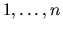

| The Rotating Disk |
A neat puzzle consists of a circular track with n marbles numbered . The marbles are arranged in a random order, and they can be moved around the track without altering their relative order. In one section of the track there is a rotating disk. The disk contains 4 marbles. The disk can be rotated by 180 degrees so that the inner order of the 4 marbles is reversed. Your mission, should you choose to accept it, is to write a program that will read the content of a puzzle and use the rotating disk to rearrange the marbles in natural order.
Each data set will be a permutation of the integers on a single line.
8 1 2 3 7 10 4 6 5 9 1 2 3 5 4 6 5 4 3 1 2
8 1 2 3 7 10 4 6 5 9 8 1 2 3 7 10 *9 5 6 4* 4 8 1 2 3 7 *6 5 9 10* 4 *3 2 1 8* 7 6 5 9 10 4 3 2 1 *5 6 7 8* 9 10 *1 2 3 4* 5 6 7 8 9 10 1 2 3 5 4 It is not possible to rearrange these disks in natural order. 6 5 4 3 1 2 *3 4 5 6* 1 2